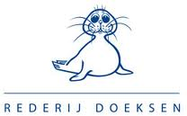
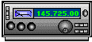

Welkom op PD3GH.NL
Wij mogen uw begroeten op de vernieuwde website, PD3GH.NL is een Server die de VC brandaris online zet Wij wensen uw veel plezier op onze website.
|  |  |
Serverstatus : |
|---|
Deze server 24 uur per dag online |
|---|

Note:Weerberichten Wordt verzorgd door Het Knmi,
Note: Hoewel wij natuurlijk ten alle tijden proberen om een zo goed mogelijke live stream van de Brandaris te verzorgen, is dit niet te garanderen. Het hangt namelijk af van verschillende factoren. Wij vragen uw begrip hier voor. Wij wensen u veel luisterplezier ! h